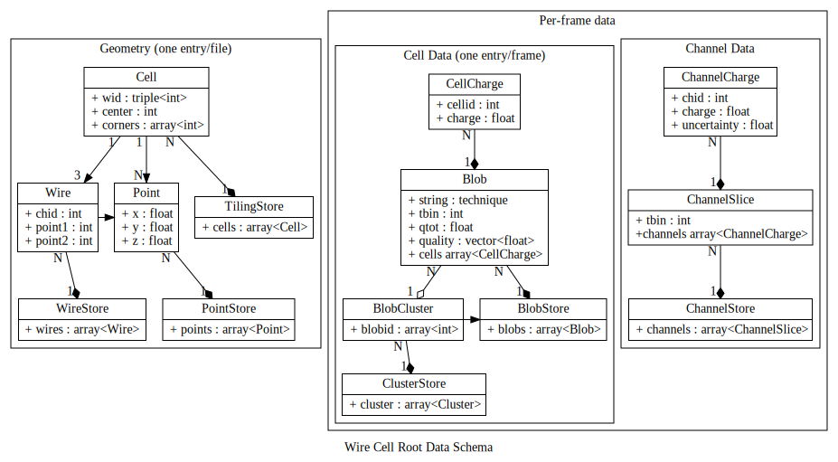

Wire Cell has a simple ROOT I/O persistency module.
Schema
The data is saved to several ROOT TFiles is shown in the following figure. Refer to the terms section for a nomenclature.

([PNG], [PDF], [DOT] and [SVG])
{kind=link}
{kind=link}
Generalities
To store the data into a ROOT file we must take care of ownership and references explicitly. In general this is handled by representing ownership as an array of objects and references as an index into this array.
There are three trees: Geometry, Channel and Cell.
Geometry
The geometry is saved into a tree with a single entry. There are
three owning arrays, WireStore, PointStore and TilingStore
owning:
-
Wirewith associated channel ID number (referred to in the Channel data tree) and two end points -
Pointall 3d Points referred to by other objects. -
Cellassociates a Wire via it's index (wid) with a center point and an (ordered) array of points that make up the corners of the cell.
Channel
Information about charge read out from all channels in a frame. One entry in this branch spans an entire readout frame.
-
ChannelStoreholds all channel data for the frame -
ChannelSliceassociates a time bintbinthat counts relative to the start of the frame with a collection of read out channel charges. A negative charge is undefined. -
ChannelChargeassociates a channel ID with a charge.
Cell
The Cell branch holds associations between charge and cells and groups of cells. This branch may hold MC truth value or reconstruction.
-
CellChargeassociates a cell ID, which is an index into theTilingStorewith a charge. A negative charge is undefined. -
Blobowns an array ofCellCharge. Thetechniqueis a user defined string to label the origin of the blob (eg, "simtruth" or maybe "2dtoyreco", etc). Thetbincounts the time bin from the beginning of the frame, theqtotis some measure of the charge for the blob as a whole (and may not necessarily be the sum of the charge on the individual cells). Thequalityis atechnique-specific measure of quality and finally the array of cell charge. -
BlobClusteris a (non-owning) association of blobs. This may be used to collect blobs together within one time slice or may be used to collect them together across multiple time slices such as to form the blobs contributing to a track or a shower. Blobs are referenced by their index into the frame'sBlobStore. All availableBlobClustersare stored in theClusterStore